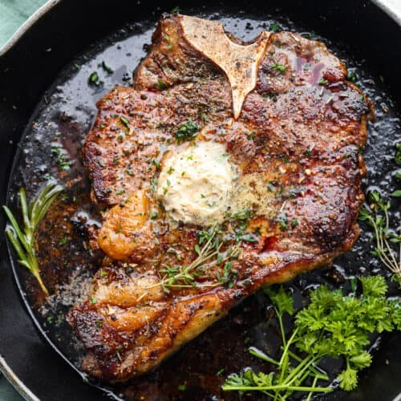

A Reciepe for T-bone Steak

Reciepe provided by tipbuzz
Here is a simple step by step instructions by tipbuzz.
Instructions
- Let steak sit at room temperature for 30-60 minutes before
cooking.
- Pat dry the steaks with paper towels.
- Rub the steak with oil, and then season with salt and
pepper on both sides.
- Heat the pan over medium-high heat. Add the steaks and
cook until browned on
- Heat a cast-iron skillet over high heat.
- Add oil to the hot skillet and add steak when it begins to
smoke.
- Sear the steak for 2 minutes for the first side. Flip and
sear 2 minutes.
- Add minced garlic, butter and fresh rosemary.
- Transfer the steak to a preheated oven at 425°F (218°C).
- Cook until it reaches the desired doneness.
- Transfer steak to a plate or cutting board and let it rest
for 5 minutes.
- Cut steak from the bone to serve.
Ingredients
1 ½ pounds: Bone Steak (about 1-inch thick)
2 tablespoons: Olive Oil
1 teaspoon Kosher: Salt (or to taste)
1 teaspoon: Cracked Black Pepper
1 teaspoon: Garlic (minced)
1 tablespoon: Butter
1 tablespoon: Fresh Rosemary
Nutrition Facts (per serving)
- 875 Calories
- 63 g Total Fat
- 206 mg Cholesterol
- 2 g Carbohydrate
- 1,390 mg Sodium
- 71 g Protein